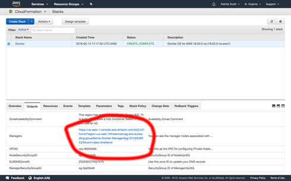
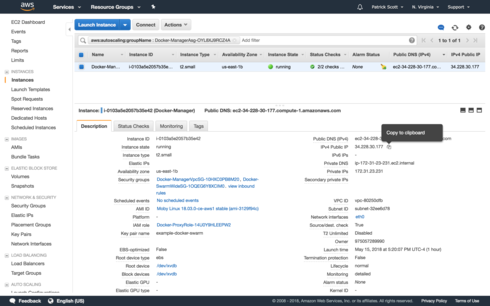

[GDD] Production Orchestration (Part 2 of 3) 07 December 2018
By now, your cluster's status should be “CREATE_COMPLETE” in the AWS Cloudformation dashboard.
Ready to explore?
Open up your AWS Dashboard, and head to “CloudFormation”
Click the checkbox to select your new “Stack” and then select the “Outputs” tab.
The first key “DefaultDNSTarget” contains the web address of your cluster’s load balancer.
If you try to go to it, you will receive an error message “This site can’t be reached”.
This is because we have not exposed any ports to the internet, and we have not deployed any services, sites, or applications to receive those ports requests.
Having run a docker swarm cluster earlier, you know this means we need to set up our proxy, and expose ports 80 for HTTP, and 443 for HTTPS.
Due to security restrictions, we cannot run these from our local machine anymore. Instead we have to “ssh” into the cluster, and then run them.
You’ll need your key from yesterday.
We’ll also need an IP address of a Manager node. We already have the key, so let’s get our one Manager node’s IP address.
Click the link on the same “Outputs” panel under the “Managers” key to open a view on the EC2 Dashboard of your manager nodes.


I moved my key into a private GitHub repository, named `example-docker-swarm-key`
Let’s slow down for a second, and talk about organization.
You should organize your code.
Good talk.
Here’s how I organize it.
I create a root folder, named “infrastructure”. Then I initialize that folder as a new git repository, and a new meta repository.
I can then add the key to the meta repository.
Using git permissions, only people who have access to the key's repository will be able to clone it. This way you can keep it with your connection scripts, but only people with permission can access it.
There are better solutions for this, but let's just go with it for now. This is pretty good, and more secure than most as github has great RBAC control, and rotating this key is simple.
This allows you to write some scripts that depend on the file being there, for when it is.
Here’s some more information on meta: Mono-repo or multi-repo? Why choose one, when you can have both?
Let’s go ahead and set that up..
First, you’ll need `nodejs` to use `meta` (for now), so download and install NodeJs from their website if you don’t have it already.
Next, install `meta`
npm i -g meta
cd ~/dev/
mkdir infrastructure
cd infrastructure
git init
meta init
# Add YOUR keys (replace YOUR_USER_NAME)
meta project add keys git@github.com:YOUR_USER_NAME/example-docker-swarm-keys.git
If you don’t want to do all that, no worries, just copy your key into a .gitignored folder names “keys”, or adjust the scripts accordingly to point to your key.
Let’s create a script named “connect.sh” inside of `infastructure` which will connect to our manager node.
ssh-add keys/example-docker-swarm.pem
ssh -A docker@YOUR-MANAGER-IP-ADDRESS
To do this run
chmod 400 keys/example-docker-swarm.pem
Now every time we want to connect, we can run
sh connect.sh
➜ sh connect.sh
Identity added: keys/example-docker-swarm.pem (keys/example-docker-swarm.pem)
The authenticity of host 'xx.xxx.xx.xxx (xx.xxx.xx.xxx)' can't be established.
ECDSA key fingerprint is SHA256:xxxxxxxxxxxxxxxxxxxxxxxxxxxxxxxxxx.
Are you sure you want to continue connecting (yes/no)? yes
Warning: Permanently added 'xx.xxx.xx.xxx' (ECDSA) to the list of known hosts.
Welcome to Docker!
Let’s explore a little bit. Next time we will expose some ports and deploy our stacks.
Running `docker node ls` shows us the nodes that make up our cluster!
~ $ docker node ls
ID HOSTNAME STATUS AVAILABILITY MANAGER STATUS ENGINE VERSION
x230s9996exuh8jgbpms1l71i ip-172-31-13-134.ec2.internal Ready Active 18.03.0-ce
tfbpd4rqo5max0k199g3chfrw * ip-172-31-23-231.ec2.internal Ready Active Leader 18.03.0-ce
Feel free to check out the docker swarm docs and play around with some commands.
If you’re feeling adventurous try deploying the stacks we’ve created!
Tomorrow we’ll walk through the process!
Patrick “connect.sh” Scott